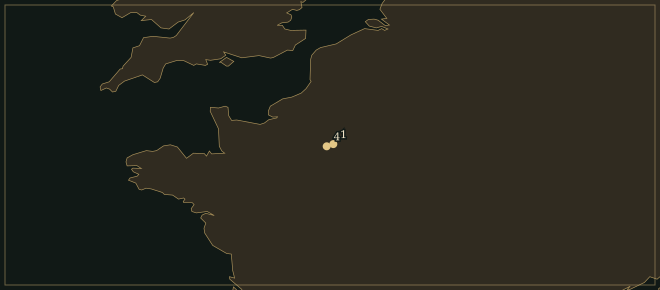

FrançoisCouperin
Musician who played for Louis XIV on Sundays, known at the harpsichord for held notes, trills and well-placed silences.
- Family
- Son of Charles Couperin; nephew of Louis; organist at Saint-Gervais from 1685
- At court
- Royal chapel organist from 1693; chamber harpsichordist from 1717
- At the keyboard
- Four books, 1713–30: 27 ordres; L’Art de toucher le clavecin, 1716–17
- Beyond the keyboard
- Two organ masses; Leçons de Ténèbres; chamber concerts and viol suites
Life
On Sundays in 1714 and 1715, François Couperin played chamber music for the ageing Louis XIV. The violinist François Duval joined him, with wind players and a viol; Couperin played the harpsichord. When he published the Concerts royaux in 1722, he recalled that the king had summoned him “almost every Sunday of the year”. The dances in the collection, among them an allemande, a grave sarabande and a little chaconne, had been played in the king’s rooms. Louis XIV had once danced in his own court ballets.
Paris and VersaillesThe Couperins at Saint-Gervais
Couperin was born in Paris in 1668, into a family already established at the organ of Saint-Gervais. His uncle Louis had held the post before his father Charles, and had died before François was born. When Charles died in 1679, the church kept the succession open for the boy, and Michel-Richard de Lalande covered the duties until he was ready. François studied with Jacques Thomelin and took over in 1685. At twenty-five he won one of the four organists’ places at the royal chapel. He kept his Paris work, travelled to court for his quarter of service and taught the royal children.
The two organ masses of 1690 show what parishioners heard. Sung sections of the Mass alternate with short organ pieces, each calling for a particular combination of stops. In a tierce en taille the melody is in the tenor, below the accompanying upper parts, played on the tierce stop. The offertory of the parish mass is on a larger scale, with a slow opening, a section in imitation and a closing section in gigue rhythm. They are Couperin’s only surviving organ works.
The surviving Leçons de Ténèbres appeared between 1713 and 1717. Couperin had already supplied Good Friday lessons for the nuns of Longchamp; these three belong to the first day of the offices. Only three of the nine lessons he mentioned survive. The texts are Jeremiah’s Latin lament for the ruin of Jerusalem, and before each verse a Hebrew letter is set as a long, ornamented vocal line. The first two lessons are for a single high voice and continuo. In the third, two voices move close together in dissonance and resolve; at several points one singer holds a note after the other has already moved.
1713–30The four harpsichord books
Couperin was in his mid-forties when his first harpsichord book appeared in 1713. He apologised for the delay, which he put down to court duties, teaching and illness; meanwhile copyists had been spoiling pieces already in circulation. He had taken particular trouble over the engraving. “I have always had an object in composing all these pieces,” he explained in the preface. Their titles followed those occasions and ideas, and some were “a kind of portrait” whose likeness people had recognised under his fingers.
Couperin wrote many character pieces for the harpsichord. Les Folies françoises, ou les Dominos is a set of variations, each depicting a masked character; Le Réveil-Matin imitates an alarm clock. Les Barricades mystérieuses is in the second book. Its four parts overlap and pass notes between them, so that no single line stays in the foreground for long. A B♭ major refrain returns between three couplets, and each time it returns, notes held over from the preceding chord sound against it.
The preface to the first book also contains his statement “I much prefer what moves me to what surprises me.” He had noticed that the strongest hands, capable of the quickest passagework, were not always the best in expressive music. The harpsichord’s strings are plucked, and a finger cannot make a sounding note swell. Couperin looked for expression in the moment before the pluck and in the moment when the finger lets go.
1716–17L’Art de toucher le clavecin
L’Art de toucher le clavecin begins with the pupil’s body. Couperin asked for something under a child’s feet so that they did not dangle, for the wrists to be held level, and for a mirror on the music desk to cure grimaces. He preferred beginners to learn pieces by heart before reading them, and he distrusted unsupervised practice so thoroughly that he took away the key to the instrument after a lesson. Otherwise, he explained, a child might undo in a moment what he had carefully established in three-quarters of an hour.
His book includes an allemande and eight preludes, with fingerings to train the hands. It also gives smaller instructions. The aspiration releases a note early; the suspension puts a short silence before the next attack. In his third harpsichord book he added a comma-like sign for the end of a phrase, and compared its use with pausing at punctuation when reading aloud. He also wrote about players who ignored his ornaments. In the 1722 preface he demanded that everything be observed “without addition or subtraction”.
The reunited tastesCorelli, Les Nations and the apotheoses
Couperin admired Corelli’s sonatas, and his first works in that manner were presented to Parisian society under a false name. He told the story himself in the preface to Les Nations in 1726. He rearranged the letters of his name to make an Italian one and claimed that a relative abroad had sent him a sonata by a new composer. The company received it eagerly. Encouraged by the applause, he wrote more, and eventually he put his own name on the music. For Les Nations he joined those sonatas to substantial French dance suites, making four large groups for two treble instruments and continuo.
In Les Goûts-réunis and the apotheoses of Corelli and Lully, Couperin staged the reconciliation as a small drama. Corelli climbs Parnassus, and Lully arrives to meet him. Apollo persuades the two masters that French and Italian taste together make the perfection of music. The closing trio of L’Apothéose de Lully is called La Paix du Parnasse. One upper part is assigned to Lully and the other to Corelli.
The two Pièces de violes suites appeared in 1728. Near the end of the second comes La Pompe funèbre, a slow procession, followed by the quick La Chemise-blanche. By the publication of his last harpsichord book in 1730, Couperin’s health was failing. The pieces had been finished for about three years, and friends had urged him to stop working. He hoped his family would find enough in his portfolios to make people miss him, “if regrets are of any use to us after life”. He died in Paris in September 1733. Nearly two centuries later, Ravel used his name in the title of another book of French dances, Le Tombeau de Couperin.
Places

All 9 places, with sources
- Paris (parish of Saint-Gervais) · 1668-11-10–1685 · born
Born in the rue du Monceau-Saint-Gervais; baptised at the church of Saint-Gervais on 12 November.
François Couperin — Wikipedia (French) · François Couperin dit le grand (1668–1733) — musicologie.org
- Saint-Gervais, Paris · 1685–1723 · worked
Took the family organ post at 17 after Lalande’s interim; left it to his cousin Nicolas in 1723.
François Couperin dit le grand (1668–1733) — musicologie.org · François Couperin — Wikipedia (French)
- Paris · 1690 · worked
Obtained the royal privilege for his <i>Pièces d’orgue</i>, two organ Masses, published in November. Pièces d’orgue consistantes en deux messes.
François Couperin dit le grand (1668–1733) — musicologie.org · François Couperin — Wikipedia (English)
- Chapelle royale, Versailles · 1693–1730 · worked
Organist in Louis XIV’s chapel for the January quarter; harpsichord teacher to the Duke of Burgundy and princesses.
François Couperin dit le grand (1668–1733) — musicologie.org · François Couperin — Wikipedia (French)
- Paris · 1713–1730 · worked
Published the four books of his harpsichord pieces in Paris, in 1713, 1717, 1722 and 1730. Pièces de clavecin, Books I–IV.
- Versailles · 1717–1730 · worked
Appointed ordinaire de la musique pour le clavecin after d’Anglebert; his daughter inherited the post in 1730.
François Couperin dit le grand (1668–1733) — musicologie.org · François Couperin — Wikipedia (English)
- Rue Radziwill, Paris · 1724–1733 · lived
Family home at the corner of rue Radziwill and rue des Petits-Champs; the building still stands.
- Cimetière Saint-Joseph, Paris · 1733-09 · buried
Buried in the small Saint-Joseph cemetery of Saint-Eustache parish; his remains were later moved to the Paris catacombs.
François Couperin — Wikipedia (French) · Cimetière Saint-Joseph — Wikipedia (French)
- Paris · 1733-09-11 · died
Died in Paris at the age of 64.
François Couperin dit le grand (1668–1733) — musicologie.org · François Couperin — Wikipedia (French)
Influences
Teachers, encounters and borrowed music, each with its account and sources in the Web of Influence.
Influences received
The Sound
𝄾Touch
A short silence can give a harpsichord note an accent. Couperin’s suspension delays the note’s attack; the aspiration cuts the preceding note short. Both appear in his teaching, beside finger substitutions that keep a line connected while the hand moves.
♮Held notes
In Les Barricades mystérieuses, a note is often held while the bass moves on. The two notes are briefly dissonant; then the upper note moves by step to a chord tone. Several parts do this in turn, so the B♭ major chords are completed in overlapping stages. The refrain returns several times.
𝅘𝅥Ornaments
Couperin’s trill begins on the note above the written pitch. That first note is played on the beat and may clash with the bass before it resolves. His table also distinguishes mordents, slides and short breaks in the sound. Removing the signs would take away notes and accents he specified in the same way as the notes printed on the stave.
𝄋Dance and disguise
In Les Folies françoises, ou les Dominos each variation in the series carries the name of a masked character. Elsewhere the titles name an allemande, courante or sarabande directly. The dance steps still govern the pieces whose titles are riddles. An upbeat starts a dance, a sarabande has a long second beat, and a rondeau repeats its refrain between new episodes.
𝄞French and Italian
Each of the four groups in Les Nations begins with an Italianate sonata and continues with French dances. Two treble instruments answer and imitate one another above a bass; then a courante or sarabande changes the pace of their exchange. In the Concerts royaux Couperin allowed the lines to pass between violin, flute, oboe, viol and bassoon.
Works
A selection from the composer’s works.
- 1690Messe pour les paroisses · Messe pour les couventsOrgan, alternating with sung liturgyHis only surviving organ music. The parish mass has a grand offertory in three sections, ending with a gigue.
- 1713Premier Livre de pièces de clavecinHarpsichordOrdres 1–5, with the ornament table that explains Couperin’s signs. In the preface he described some of the pieces as portraits recognised under his fingers.
- 1713–17Leçons de Ténèbres pour le MercredyOne or two high voices and continuoThe three surviving Holy Week lessons. The Hebrew letters are set as long vocalises before the Latin text of the lament begins; the third lesson is for two voices.
- 1716–17L’Art de toucher le clavecinHarpsichord; pedagogical treatise with piecesEight preludes and an allemande accompany advice on fingering, ornaments and posture. Couperin prescribed a mirror for pupils who pulled faces.
- 1717Second Livre de pièces de clavecinHarpsichord; two instruments in selected piecesOrdres 6–12 include Les Barricades mystérieuses. The ninth opens with an allemande for two harpsichords.
- 1722Troisième Livre de pièces de clavecin · Concerts royauxHarpsichord; flexible chamber ensemble for the concertsOrdres 13–19 include the masked variations of Les Folies françoises. The four appended chamber concerts preserve music played for Louis XIV in 1714–15.
- 1724–25Les Goûts-réunis · L’Apothéose de Corelli · L’Apothéose de LullyChamber ensemble with continuoCouperin’s work brings Corelli and Lully together on Parnassus. At their reconciliation the two composers are represented by the upper parts of a trio.
- 1726Les NationsTwo treble instruments and continuoFour sonatas followed by French suites: La Françoise, L’Espagnole, L’Impériale and La Piémontoise. Some of the sonatas had first circulated under an invented Italian name.Recordings in the Hall
- 1728Pièces de violesBass viol and continuoTwo suites. The second ends with the slow La Pompe funèbre and the quick La Chemise-blanche. The bowed viol can sustain notes that die away quickly on the harpsichord.
- 1730Quatrième Livre de pièces de clavecinHarpsichordOrdres 20–27, completed about three years before publication. In the preface, the ailing Couperin said that his friends had urged him to stop working.
In the Score
Short examples, engraved and playable.
French performance practiceEqual notes and possible inequality
The held noteResolution of a fourth to a third
Sister Arts

Some guests watch the couple dancing at the centre, and others talk among themselves. Watteau painted this gathering around the time of Couperin’s first two harpsichord books.

Watteau submitted this picture to the Académie royale in 1717, the year of Couperin’s second harpsichord book. The lovers gather beneath Venus, pausing and turning towards one another as the line of couples moves away. Couperin’s portraits likewise depict people through a gesture.
Recommended recordings
- Complete harpsichord piecesChristophe Rousset, harpsichordHarmonia MundiAll 27 ordres, with brilliant playing and a well-recorded harpsichord. The short character pieces are heard in their complete ordres, where recitals usually give them singly.
- Trois Leçons de TénèbresJudith Nelson, Emma Kirkby, Jane Ryan, Christopher HogwoodL’Oiseau-Lyre / Decca · 1977An excellent starting point for the sacred music, scored for two distinct high voices, viol and chamber organ; in so spare a texture any strained interval is exposed. The third lesson is the centrepiece of the record.
- Pièces de violesJordi Savall, Ariane Maurette, Ton KoopmanAstréeSavall plays La Pompe funèbre, with Maurette and Koopman on the bass beneath him. The recording ends with La Chemise-blanche.
Lineage
Couperin named Corelli and Lully in his chamber music and, in the works devoted to them, brought them together on Parnassus. Rameau used the same French dances and ornament signs, and went on to write harpsichord pieces depicting hens and Cyclopes. Debussy admired Les Barricades mystérieuses; Ravel put Couperin’s name in the title of his own memorial suite of French dances.
Further reading
- David Tunley, François Couperin and ‘The Perfection of Music’ (Aldershot: Ashgate, 2004).biography
Life and works, with attention to Couperin’s French and Italian models.
- Edward Higginbottom, ‘Couperin [le grand], François (ii)’, Grove Music Online (Oxford University Press, 2001).reference
Biographical reference, work-list and bibliography; subscription required.
- Maurice Cauchie, Thematic Index of the Works of François Couperin (Monaco: The Lyrebird Press, copyright 1949).catalogue
Musical incipits identify works across the keyboard, chamber and sacred repertories.
- François Couperin, L’Art de toucher le clavecin, revised edition (Paris: the author, 1717).study
Freely available French treatise on touch, fingering and ornament; first published in 1716.
Cite this page
Contrapunctus. “François Couperin.” Accessed 19 October 2026. https://mottopanikeiku.github.io/contrapunctus/composers/couperin.html.
@misc{contrapunctus-composers-couperin,
author = {{Contrapunctus}},
title = {François Couperin},
howpublished = {\url{https://mottopanikeiku.github.io/contrapunctus/composers/couperin.html}},
note = {Accessed 2026-10-19}
}